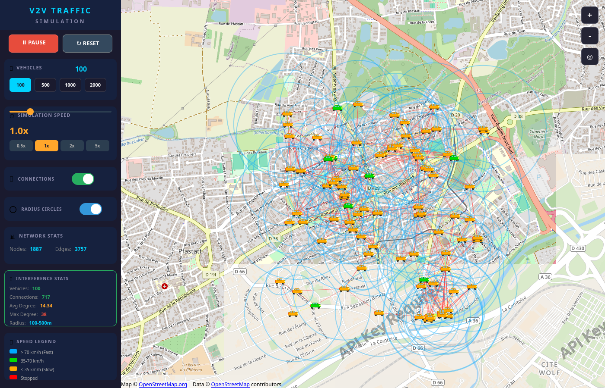

Construire le réseau
Lecture d'un extrait OSM, filtrage des routes et construction d'un graphe orienté. Une carte de démonstration légère est embarquée dans l'application.
RoadGraph · Node · EdgeObserver comment la mobilité transforme les connexions entre véhicules. Un prototype de bureau qui relie un réseau routier réel à un graphe de portée V2V.

Le réseau routier vient d'OpenStreetMap. Les trajectoires et les portées sont simulées. Cette distinction guide toute la présentation du projet.
Lecture d'un extrait OSM, filtrage des routes et construction d'un graphe orienté. Une carte de démonstration légère est embarquée dans l'application.
RoadGraph · Node · EdgePoints de création pondérés, parcours aléatoires et positions interpolées. L'interface permet de démarrer, mettre en pause et modifier la population.
TrafficSimulation · VehicleLes distances et les rayons déterminent les liens affichés. Cercles, couleurs et degrés rendent le graphe observable pendant la simulation.
InterferenceGraph · Qt QuickLe fond cartographique est fourni séparément par Qt Location. Les composants échangent via les propriétés, signaux et modèles Qt.
La démonstration routière est incluse. Les dépendances Qt sont dans le paquet binaire, séparées de l'archive de sources.
tar -xJf v2v-linux-x86_64.tar.xz
cd v2v-traffic-simulation-linux-x86_64
./bin/appfinalproductUne session graphique est nécessaire. Le fond de carte utilise Internet ; le réseau routier de démonstration est embarqué. Les versions Windows et macOS ne sont pas distribuées ici.
Un outil de visualisation de la mobilité et de la proximité entre véhicules.
Aucun pipeline de vision n'est implémenté dans cette version. YOLO, ByteTrack, OpenCV, FastAPI, Docker et MLflow ne font pas partie de la stack livrée.